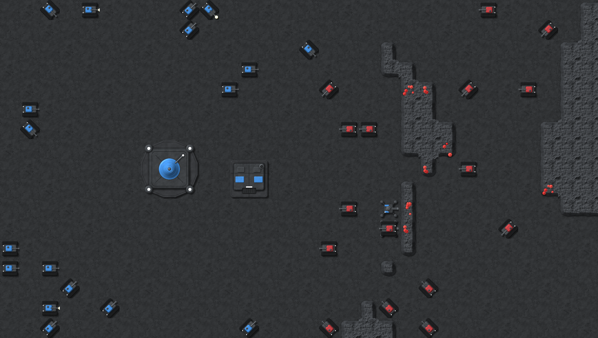
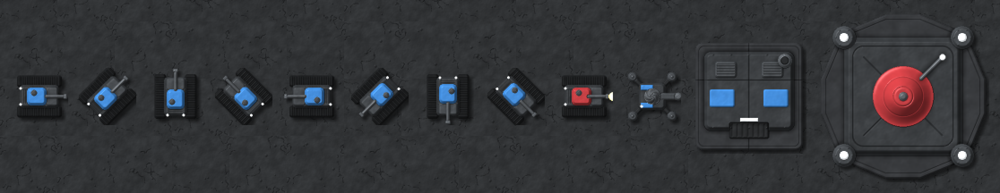
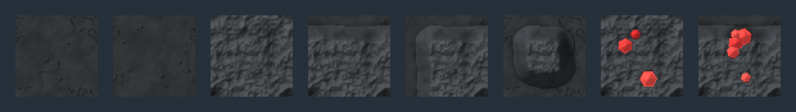

WAR-2D lit style samples
"Factorio combined with the current style", in the Charcoal palette you picked. Every sprite is still drawn by code, but now as a lit 3D-ish surface: bevelled plates, panel lines, rivets, grime, light from the top left, shading and drop shadows, at 64 px per tile (the earlier samples were flat pixel art at 32 px). Blue and red are player colours 1 and 2; the team-coloured parts follow each player's pick.
In game (1:1, about the default zoom)
A real generated map: the HQ, a Small Unit Spawner, a Miner by a gem vein, and two tank armies.

Units and buildings (2×)
The Tank in 8 facings (the light stays fixed, so each facing is rendered, not rotated), the Tank firing, the Miner, the Small Unit Spawner and the HQ.

Terrain (3×)
Two floor tiles, rock enclosed, open to the north, open on two sides and isolated, then gem rock enclosed and at an edge.
